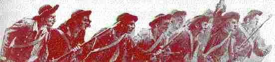
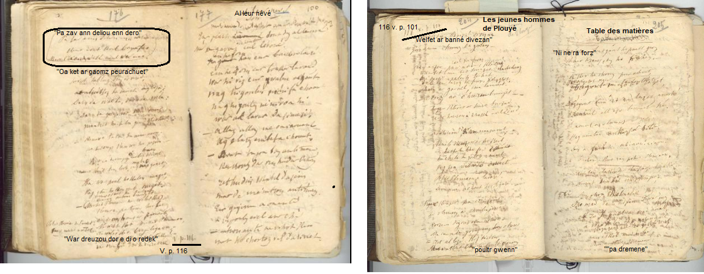

Paotred Plouyeo

Ton
|
I
|
16.
Hag it lec'h-all, c'hwi hag
ho tud,
Gant arc'hant flamm , da glask ur c'hlud! - 17.Oa ket ar ger peur lavaret , Savet strafuilh barzh ar vered, 18.Tud kozh ha yaouank da grozañ, Darn da wac'hañ, darn da ouelañ ; 19. Darn all da gouezhañ d'an douar, Mantret ar galon gant glac'har. 20. - Kenavo, tadoù ha mammoù, Na stouimp mui war ho pezioù ! 21. Ret eo mont bremañ divroet, Kuit deus lec'h emaomp bet ganet, 22. Ha war poull ho kalon maget, Hag etre ho tivrec'h douget. 23. Kenavo, sent ha sentezed, Na zeuimp mui d'ho tarempret ; 24. Kenavo, patron hor parrez, Ni zo war hent ar baourentez! - 25. Paotred Plouieou o deus laret : - Tavit, merc'hed, na ouelit ket, 26. Ken na welfet gwad peb tieg War dreuzoù e di o redek, 27. Ken na welfet al lomm diwe'añ : Gwad ar C'hallaoued da gentañ! - 28. An archer, evel pa glevas, Diwar sez ar groaz a lammas, 29. N'ouie doare pelec'h tec'het ; 'Vel den rak e benn en-deus graet ; 30. Barzh ar garnel emañ lammet, E-touez eskern ar Vretoned 31. Hogen, klevet ur seurt burzhud : An eskern a zrask, evel tud ; 32. Hag a sav sonn, em unanet, 'Enep an Archer war o zreid ; |
33. Ha setu eñ
peurzispennet,
Ha dindano peurzouaret. III 34. Paotred Plouiev a lavare : - Deomp-ni da c'hout hon digarez! - 35. E [traoñ] Kemper dal' ma errujont, O aotrounez a c'houlenjont : 36. - Digorit d'an dud diwar maez , Ma' gomzint ouzh o aotrounez. 37.- Kit alese, kozh-tieien, Ma na garit klevet poultr gwenn! - 38. - Ni a ra forzh gant ho poultr gwenn, Kement a reomp gant ho perc'henn! - 39. Oa ket ar gomz peur-echuet, Tregont tieg a zo lazhet 40. Tregont lazhet, ha tri mil tre! Hag an tan er gêr, ha ker ge ! 41. Ken a grier : - Ai ! aou ! ai ! aou ! Truez ! truez ! paotred Plouiev ! 42. Diskaret leizhig a zier, Nemet hini eskop Kemper, 43. Hini Rosmadeg, 'n aotrou kaezh, A zo mat d'an dud diwar maez ; 44. A zo den a wad roueoù Breizh, Hag a zalc'h mat 45. An Aotrou Eskob a venne, Er ruioù kêr pa 'dremene : 46. - Dale d'an droug , ma bugale ! En an' Doue ! dale ! dale ! 47. Paotred Plouiev, it war ho kiz, Na vo ket mui torret ar C'hiz. - 48. Paotred Plouiev 'zentas outañ: - Deomp-ni war hor c'hiz, ac'hanta ! 49. Nemet dre wall-chañs 'deus-int graet : N'int ket holl d'ar gêr erruet |
Extraits du Deuxième carnet de collecte de La Villemarqué
Excerpts from La Villemarqué's Second Collecting Book

|
p. 174 I. 1. Mallozh d’an heol, ha (mallozh) d’al loar, Mallozh d'ar glizh a gouezh war an douar! 2. Mallozh d’an douar, ha d’ar parkoù, A zo penn-abeg d’ar (strivoù) gwall-strivoù; 3. A zo d'ar strivoù kiriek (penn-abeg) Tre an aotrou hag an tieg. 4. A laka 'r strafuilh war ar maez, A laka meur-a-hini diaes. 5. Meur emzivad hag intañvez, Meur a vinor ha minorez, p. 175 / 101 6. Meur a grouadur war an henchoù, Gant e vamm o skuilhañ daeloù! 7. Mil mallozh d’an dudjentil kêr, A ra bec'h war al labourer! 8. Tudjentil kêr , nemet tudoù Gall O klask degas gizioù Bro-C'hall. 9. O klask diskargañ gizioù Breizh Ha lakaat traoù nevez-flamm direizh . II 11. War groaz ar vered an Archer (M 'ede, war ar groaz an Archer Ma errue an archer penn ma zi) E zaoulagad ruz o teviñ taer. 12. E zaoulagad ruz o teviñ Vel d’ur podad dour o virviñ. 10 Disul gwenn, goude 'n ofern-bred. Digouet an Archer er vered ; 11bis. War diri ar groaz an archer E zaoulagad o teviñ taer. 13. - Chilaouet holl, paotred Plouiieaoù, Chilaouet ar c'hourc'hemenoù ; 14. Evit ar bloaz hag un deiz bloc'h Ra prizor pezh a berc’henn d’eoch . 15. Prizor ho tier hag ho stu, Hag ar mijoù diwar ho koust-hu. 16. Ma veot pa gerzhfet gant ho tud, Gant ho arc’hant ganeoc’h da glask ho klud. (Arc'hant er yalc’h da glask ho klud) . p. 176 dans un cercle: "Pa zav an delioù en derv Kent evit sevel e-barzh ar fav. Mervel a ray dek war nav." |
17. Oa ket
ar gomz
peur
echuet
,
Savet tabut bras er vered. 18. (An ezec'h) , Tud kozh ha youank da grozañ ; Darn da wac’hañ, darn da ouelañ. 19. Darn da gouezhañ war an douar, Mantret o galon gant glac’har. 20. - Kenavo, tadoù ha mammoù ; Na bedomp ken war ho pezioù! 21. (Ni bremañ) Ret eo deomp, mont divroet, Mont kuit d'eus lec’h, ez eomp ganet. 22. Ha war poull ho kalon maget, Hag etre ho tiv-vrec’h douget. 23. Kenavo, sent ha sentezed. Kenavo patrom benniget. (Merc’hed Plouyeo na ouelit ket) 24. Kenavo patrom hor parrez Ni zo war hent ar baourentez. 25bis. Na ouelit ket merc'hed Plouyeo, Na ouelit ket, bugaligoù! - 26. Ken na welfet gwad pep tieg, War dreuzoù dor e di o redek . ( v. p. 116) (En marge à gauche) 25. Paotred Plouyeo 'deus lavaret : - Tavit, merc'hed na ouelit ket! - p. 204 / 116 V p. 101: "Les jeunes hommes de Plouyé" 27. Welfet ar banne diwezhañ Gwad an aotrounez da gentañ – 28. An archer, pa 'n-deve klevet< Meurbet ema bet souezhet (estlammet) 29. N'ouie doare pelec'h tec'het. 'Vel den araok e benn, 'n- deus graet. 30. Barzh ar garnel oa o lammet. E-touez ar relegoù benniget. 31. Hogen klevet ur seurt burzhud: Ar relegoù zrask evel tud. 32. Ar relegoù a zo unanet; A-enep d'an Archer war o zreid; 33. Ha setu eñ peurziflammet (Ha setu e galon rannet) Hag eñ, didano, enteret (douaret) . III 34. Paotred Plouyeo a lavare: - Deomp-ni da c’hout hon digare. - |
35. E
traoñ
Kemper pa erruzont,
O aotrounez a c'houlenjont: 36. - Porzher, digorit an norioù , Ma'z eomp da gomz ouzh hon aotrou! 37. - Kit alese kozh-tieien, Mar na karit c’hwezhañ poultr gwenn! p. 205 (----------Table des matières----------) ___________________________ 38. Ni a ra fout gant ho poutr gwenn, Kement a reomp d'eus o perc'henn. - 39. Oa ket o c'homz peur-echuet, Pevar ugent oa tan-foultret 40. Tregont zo lazhet anezhe. Pevar mil all a zo lammet tre! 40bis. Daou mil a zo lammet er ger Hag an tan e ger (enni) foll ha taer (e kalz a zier) 41. Ken a larent (grient) : - Ah yaou ! A yaou ! Terc'homp kuit rak paotred Plouyeo! 42. An tan (lakaont) e-barzh ar ger leizh a zier Nemet en ti eskop Kemper. 43. Ti an aotrou [Ros]madeg kaezh A zo mat d’an dud paour diwar-maez. 44. A zo denjentil a wad royal Breizh (a wad breton, - ne laran Gall) Hag a zalc'h mat ar gizioù reizh. 45. An eskob mat o alie 'Biou an tier pa dremene : p. 206 / 117 ___________________________ Buhez Doue Neb 'n-deus klevet Buhez Doue, Na ra droug dezhañ, na zan nag avel, Na dour, ha ne gouezh ket en ifern... __________________________ 46. - Harzit, harzit , ma bugale, Harzit, harzit en añv Doue! 47. Ma bugale , (distroit endro) , it war ho kiz! Na vezo ket torret ar c’hiz. - ___ 48. Paotred Plouiev o-deus sentet, Ha d’ar ger emaint distroet. Distreiñ d'ar ger o dezent graet ; 49. Hogen, dre wall chañs 'deus int graet Ned int ket holl d’ar ger erruet. |
